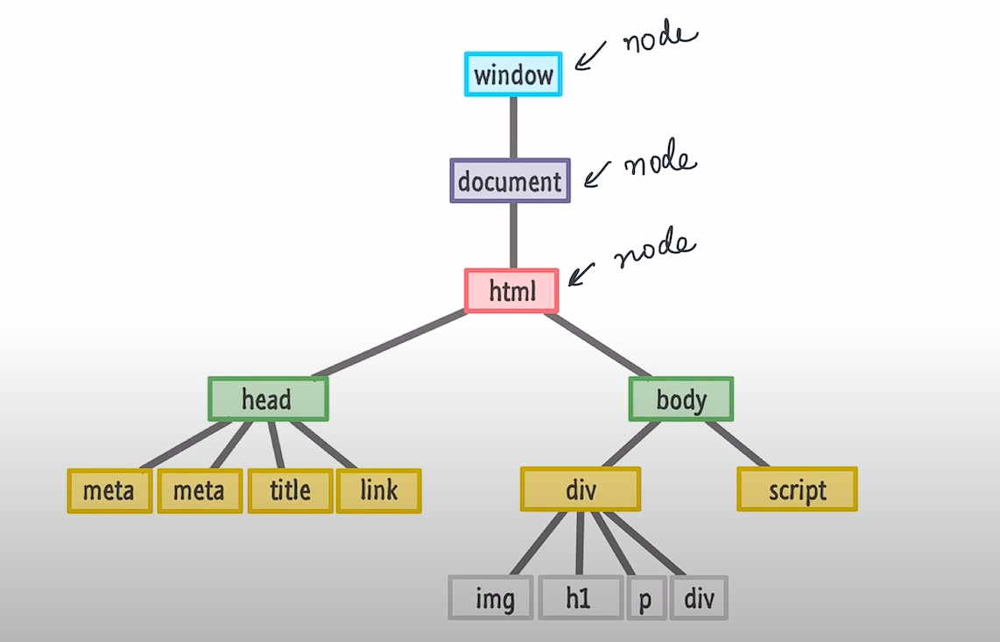
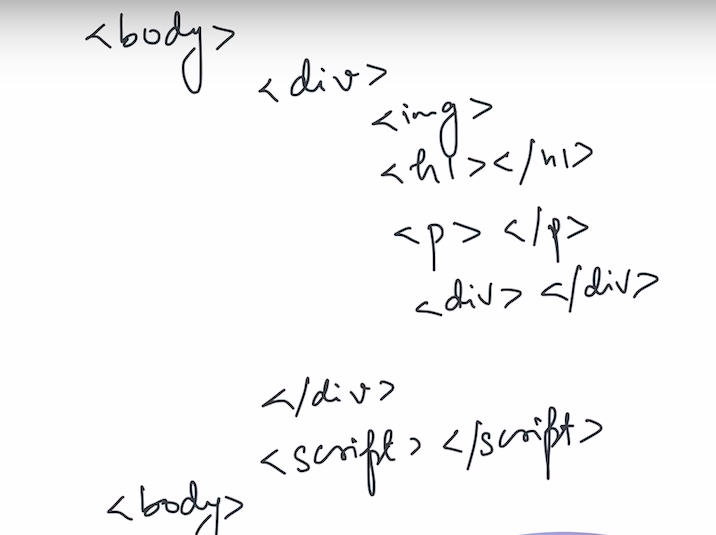
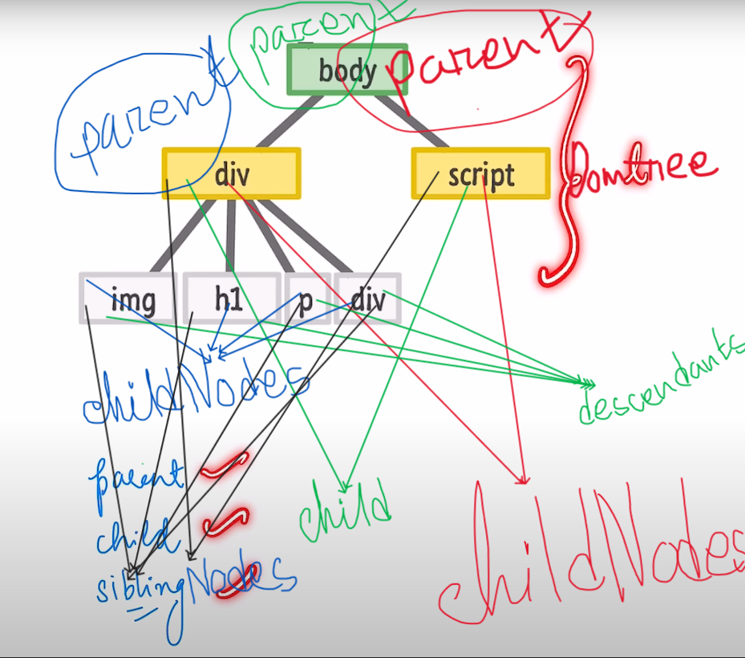

Window Object
The window object represents an open window in browser. it is browser's object(not JS's) & is
automatically created by browser.
It is a global object with lots of properties & methods.
All the codes are window object but we don't code like this:
window.alert("hello");
window.console.log("hello");
Everything of HTML file we can access by JS. All the HTML elements are stored as object in JS and we
call that special object document and this document is available in window object.
The full HTML code is available in document object. We can run this code to see the full HTML code
in browser console:
window.document
We can run this code to see the properties of document:
console.dir(window.document)
Document is also an object in window object. It is a model or representation of HTML code. This
is called DOM(Document Object Model).


